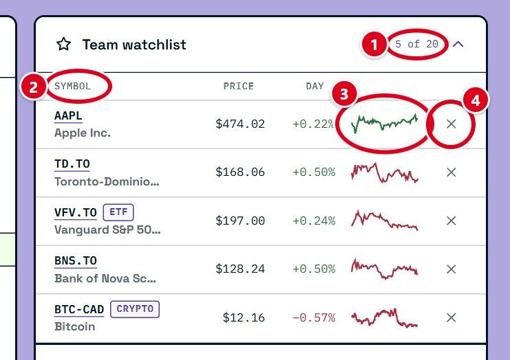
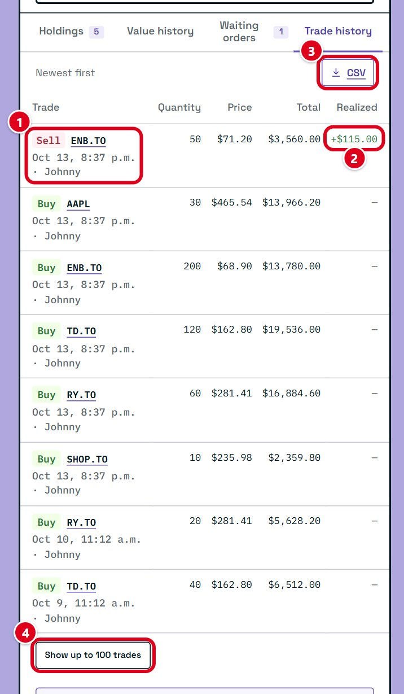

How to use the Market Lab
A step-by-step tour of Luban's trading simulator, for people who have never bought a stock.
New to investing?
Ten words the Market Lab uses all the time, explained in plain English.
Learn the wordsReady to trade?
Jump to the order ticket and place your first simulated buy.
Buy or sellEach step shows a screenshot of the Market Lab. The red boxes mark the buttons we're talking about, and their numbers match the list under each picture. Every trade uses simulated money, so nothing you do here can cost you real money.
Words you'll see
You don't need to know anything about investing to start. These are the words the Market Lab uses most.
- Stock (or share)
- A small piece of a company. When the company does well and more people want to own it, the price of its shares usually goes up. When it does badly, the price usually goes down.
- ETF
- Short for exchange-traded fund. One ETF holds many stocks at once, so buying a single ETF share spreads your money across lots of companies. You buy and sell it just like a stock.
- Crypto
- Digital currencies such as Bitcoin. Crypto trades every hour of every day. In the Market Lab you buy it in lots, a fixed small amount of the coin, instead of whole coins.
- Symbol
- The short code for something you can buy. SHOP.TO is Shopify on the Toronto Stock Exchange (the .TO means Toronto). AAPL is Apple in the US. BTC-CAD is Bitcoin priced in Canadian dollars.
- Portfolio
- Everything your team owns: your cash plus everything you've bought. Its total value decides your place on the leaderboard.
- Market value
- What something you own is worth right now: the number of shares times today's price.
- Gain, loss, and return
- How much an investment has gone up (a gain) or down (a loss) compared to what you paid. A return is the same thing as a percentage: +5% means it's worth 5% more than you paid.
- Previous close
- The price when the market last closed. Today's change is measured from it.
- Volume
- How many shares changed hands. High volume means lots of people were buying and selling.
- Order
- An instruction to buy or sell. Steps 10 and 12 explain the different kinds.
Step 1
Find your way around
Sign in at sim.lubancanada.com with the account you registered. The Market Lab opens on one screen split into three areas.

- Team portfolio. Your team's money and everything it owns.
- Quote workbench. Where you look up prices, read charts and place orders.
- Team room. Your team's watchlist, who on your team is online, and the competition leaderboard.
Tip: your whole team shares one portfolio. When a teammate buys something, you'll see it in your holdings too.
Step 2
The top bar

- Competition name and status. Open means you can trade. If it says paused or ended, orders are turned off.
- How to use. Opens this guide in a new tab, so you can follow along while you trade.
- Light or dark. The moon button switches the Market Lab to a dark theme, and the sun switches it back. It remembers your choice on that device.
- Feedback. The speech-bubble button. Tell us about anything confusing or broken, on the simulator or this website. Pick what it's about, write a few words, and send.
- Activity bell. Your team's activity feed (step 17). A red bubble with a number means there are new entries you haven't seen.
Your name sits at the top right, next to the bell. Hover over it (or tap it on a phone) to open a menu with Account and Sign out.
Your account page
Display name. Change the name your team sees. It updates the top bar, your team's member list, and every trade you've placed.
Sign-in and security. Change your email or password, or add multi-factor authentication.
Delete your account. At the bottom of the page. It removes your name, email, sign-in and seat on your team for good. Your team keeps its portfolio, and your trades stay on its record as made by Deleted user.
Step 3
Your portfolio at a glance

- Total portfolio value. Your cash plus the current value of everything you own. This is the number that ranks your team.
- Daily return. How much your portfolio has gained or lost since the previous day.
- Total return. How much it has gained or lost since the competition started.
- Where your money is. The bar splits your total into holdings (what you own), buying power (cash you can spend right now), and cash set aside for buy orders that are still waiting (step 12). Cash, on the right, is your buying power and set aside added together.
- Unrealized. The gain or loss on shares you still hold. It changes with the price until you sell.
- Realized. The gain or loss you've locked in by selling.
The time of the price snapshot is along the bottom. The buttons explain each number.
Step 4
Your portfolio over time
Open the Value history tab under the portfolio summary.

- 7D, 1M and ALL. Show the last seven days, the last month, or everything since you started.
- Latest value. Your portfolio's value right now. The line shows how you got there.
Step 5
Look up a stock

- Search box. Type a company name (like Royal Bank) or a symbol (like RY.TO). You can also click the empty box to see popular picks.
- Suggestions. Click one to load it into the workbench. Its price, chart and order ticket all switch to it.
Tip: Canadian companies on the Toronto Stock Exchange end in .TO. US companies have no ending. Crypto looks like BTC-CAD.
Step 6
Read the quote

- Where it trades. The exchange, its sector (the kind of business), whether its market is open, and when the price was last updated.
- Price. The latest price, in Canadian dollars. US stocks are converted for you.
- Watch. Adds this stock to your team's watchlist (step 7). The button then says Watching; press it again to take the stock off.
- Today. How much the price has moved since the previous close, in dollars and as a percentage. The band is green when it's up and red when it's down. The previous close and the price source are on the right.
Prices come from Yahoo Finance's free feed and can be a few minutes behind the real market.
Step 7
Your team's watchlist
The watchlist sits at the top of the team room. It's one list for your whole team, so anything a teammate adds shows up for you too.


- How full it is. A team can watch up to 20 symbols.
- Sort. Click Symbol, Price or Day to sort the list. Click again to flip the order.
- Today's trend. A small chart of the price so far today, green if it's up and red if it's down.
- Remove. Takes the symbol off the list for everyone on your team.
Tip: click a symbol in the watchlist to load it into the workbench. Hover over it to see who added it.
Step 8
Read the price chart

- 1D, 5D, 1M, 3M. Show one day, five days, one month, or three months of prices.
- Hover box. Move your mouse over the chart (or tap it on a phone) to see the price at that moment: where it opened, its high and low, where it closed, and the volume.
- Advanced view. Opens a bigger chart with more tools (step 9).
The dashed line with a coloured label on the right is today's price. On the 1D chart, a grey dashed line marks the previous close, so you can see at a glance whether the price is above or below it. The bars along the bottom are volume.
Step 9
The Advanced view

- Line, Candle, Bar. Three ways to draw the same prices. Line is the simplest. Candle and Bar show more detail for each time period (see below).
- Price readout. O, H, L, C and V stand for open, high, low, close and volume for the bar under your mouse.
- Volume. Shows the volume for that bar. The arrow hides or shows the volume bars at the bottom.
- Range and Dates. Pick a preset range, or click Dates to choose your own start and end date, then Apply.
- Interval. How much time each bar covers, from 1 minute to 1 week. Greyed-out choices aren't available for the dates you picked.
- Close. Returns to the main screen. The Esc key works too.
How to read a candle
Each candle is one time period, like five minutes or one day. A green candle closed higher than it opened. A red candle closed lower. The thick body runs from the opening price to the closing price, and the thin line through it reaches the highest and lowest prices in that period.
Step 10
Buy or sell
The order ticket sits under the chart and always trades whatever is loaded in the workbench. Your choices are on the left, and the summary on the right adds them up.

- Action. Buy to buy shares, Sell to sell shares your team owns. Short and Buy to cover are for betting a price will fall; the button explains them.
- Order type. Market trades right away at the current price. The other types wait for a price you choose (step 12).
- Quantity. How many shares to buy or sell. Stocks and ETFs trade in whole shares, and crypto trades in whole lots.
- Max (or All when selling). Fills in the most you can buy with your buying power, or everything you can sell. It asks you to confirm first (step 11).
- Order summary. Adds it all up before you commit: the price you'll probably get, times the number of shares, makes the estimated total. Underneath, it shows the cash (or shares) you'll have left afterwards.
- Place simulated buy (or sell). Sends the order. A market order fills straight away, and the result shows below the ticket.
- Clear ticket. Resets everything you typed.
Stocks and ETFs can only be traded while their exchange is open, which is 9:30 a.m. to 4:00 p.m. Eastern time on weekdays for both Toronto and the US. Crypto trades any time. When a market is closed, the ticket tells you why and the button stays off.
Tip: start with a small order to see how it works. You can always buy more.
Step 11
The Max and All buttons

- What it will do. How many shares it would fill in, what they'd cost, and what's holding it back: your buying power, or the 25% limit on any one holding.
- Cancel. Leaves the quantity as it was.
- Use. Fills in that quantity. Nothing is bought or sold until you press the place button on the ticket.
Tip: putting all your money into one company is risky. If that one company has a bad day, your whole portfolio does too.
Step 12
Orders that wait for a price
Instead of trading right now, you can tell the Market Lab to trade later, once the price reaches a number you pick. These are the order types:
- Market
- Buys or sells right away at the current price.
- Limit
- Waits for your price or better. A limit buy at $50 only buys if the price drops to $50 or lower. A limit sell at $60 only sells at $60 or higher.
- Stop loss
- Sells if the price falls to the number you set, so a loss can't grow past it. It sells at the next available price, which can be a little lower if the price is dropping fast.
- Take profit
- Sells once the price rises to your target, locking in the gain.

- Order type. Pick Limit, Stop loss or Take profit.
- Price. The price the order waits for. The current price is shown underneath to help you choose.
- Time in force. How long the order waits. Day cancels the order when the trading day ends. Good until cancelled keeps it waiting until it fills, someone cancels it, or the competition ends.
- Exits for this buy. Optional. Press Add take profit or stop loss under the quantity, then fill in a take profit price, a stop loss price, or both. They start waiting as soon as your buy fills, and when one of them sells, the other is cancelled.
The Market Lab checks waiting orders about once a minute while their market is open. Money for a waiting buy is set aside, so your buying power drops until it fills or is cancelled. A team can have up to 20 waiting orders at once. The buttons next to each field explain them in the Market Lab too.
Step 13
Your holdings

- Symbol. Click it to load that holding into the workbench, ready to look at or sell.
- Shares. How many shares (or lots) your team owns. If some are held back for a waiting sell, it says so.
- Avg cost. What you paid per share on average, with the total you paid underneath. Buying more at a different price changes the average.
- Market value. What they're worth at today's price.
- Gain/loss. How much they've made or lost compared to what you paid.
- CSV. Downloads your holdings as a spreadsheet file you can open in Excel, Numbers or Google Sheets.
- Map. Opens the portfolio map (step 14).
Holdings are listed from the biggest to the smallest by market value.
Step 14
The portfolio map
The map shows your whole portfolio as a picture. Each tile is one holding, grouped by sector and industry. The bigger the tile, the more of your money is in it. Green tiles are up, red tiles are down, and grey is about even.

- Color by. Total return colours each tile by how it's done since you bought it. 1-day % colours it by today's move.
- Size by. Market value makes bigger holdings bigger tiles. Equal makes every tile the same size.
- Show cash. Shows your uninvested cash as the grey area around your holdings.
- A holding. Hover for details, or click it to open that holding in the workbench.
- Legend. What each colour means.
If the map is hard to read, View as list shows the same information as a table.
Step 15
Your waiting orders
They're on the Waiting orders tab. The number on the tab shows how many your team has.

- The order. What it will do and who placed it.
- Lasts. Whether it ends today or waits until it's cancelled.
- Cancel. Removes the order and frees up any money set aside for it. Anyone on your team can cancel any of the team's orders.
Step 16
Your trade history
Every trade your team has made, newest first, is on the Trade history tab.


- The trade. Whether it was a buy or a sell, the symbol, when it happened, and who on your team placed it.
- Realized. What a sale made or lost compared to what you paid. Buys show a dash, because nothing is locked in until you sell.
- CSV. Downloads every trade as a spreadsheet file.
- Show up to 100 trades. The list starts with your latest eight. This loads more.
Step 17
Your team's activity
Every order anyone on your team places shows up in one feed, behind the bell at the top right.

- The bell. Click it to open or close the feed. When there's something new, a red bubble on its top right shows how many entries you haven't seen. Opening the feed clears it.
- An entry. What happened, who did it, and when. New entries have a purple mark on their left edge. Entries can't be edited or deleted.
- Status. Filled means the trade went through. Waiting means it's waiting for its price. Cancelled and Expired mean it ended without trading.
Tip: talk to your team before big trades. You all share the same money.
Step 18
Your team and the leaderboard

- Team presence. Everyone on your team. A green dot means they're online now.
- Your team. Highlighted and tagged You so you can find it.
- Value. Each team's total portfolio value, under its name. The highest value when the competition ends wins.
- Return since start. How much each team has gained or lost, as a bar and a percentage. Green bars are up and red bars are down.
Every team is valued at the same prices at the same moment, so the ranking is fair.
Step 19
Is everything up to date?

- Connection. Connected means the Market Lab is talking to the server. Your team's numbers and prices refresh about every 5 minutes.
- Last team sync. When your team's numbers last refreshed.
- Version. Click it to open What's new, a list of everything that has changed in the Market Lab.
If the page says it can't connect, check your internet and use the Retry now button that appears near the top.
Good habits for beginners
- Spread your money out. Owning several different companies, or an ETF, means one bad day doesn't sink your whole portfolio.
- Know why you're buying. Look at the chart and the company's sector first. A price that jumped a lot in one day can fall just as fast.
- Use a stop loss. It sells for you if a price falls too far, even when you're not watching.
- Don't chase every move. Prices go up and down all day. Checking once or twice a day is plenty.
- Ask questions. The weekly info sessions are a good place to ask, or email jsun.luban@gmail.com or joseph789222@gmail.com.
Something confusing or broken? Tell us. Sign in to the Market Lab and use the feedback form, or the speech-bubble button next to the activity bell. You can send feedback about this website or the simulator.
The Market Lab uses simulated money for education. Nothing in this guide is investment advice. See the contest rules for the full terms.